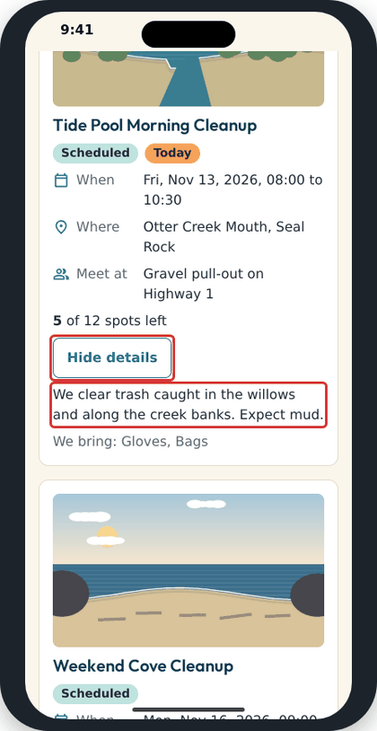

👆 Lesson 2.4: Touch and Input
Until now, Shoreline Crew has only been something to look at. In this lesson it starts to listen to fingers. You build a button that answers the moment it is touched, let volunteers open each cleanup's details, add a search box that filters the cleanups as they type, deal with the keyboard that slides up over half the screen, and add a switch that hides the cleanups that are already full.
🎯 Learning Objectives
By the end of this lesson, you will be able to:
- Make anything tappable with
Pressable, explain its press lifecycle (press in, press out, press, long press), and show press feedback with a style function - Give every control a finger-sized touch target with
minHeightandhitSlop, and a role, a label and a state for screen readers - Build a controlled
TextInputwithonChangeText, and choose the keyboard and its behavior withinputMode,enterKeyHint,autoCapitalizeandautoCorrect - Put the keyboard away at the right moments, and keep taps working while it is open
- Use
Switchfor an on/off choice and know which other controls React Native has built in
📦 Code for this lesson
Starting code: lesson-07-start.zip · Finished code: lesson-07-end.zip. Each folder has a README with the commands to run it.
In This Lesson
👋 Welcome: From Clicks to Fingers
On the web, input is mostly handed to you. A <button> has a click, a hover and a focus ring; an <input> has a border and a label; the keyboard is a physical thing on the desk. A phone changes all three:
- A finger is not a mouse pointer. It is wide, it covers what it touches, it has no hover, and it sometimes lands, slides and lifts somewhere else. The app has to show that it felt the touch, right away, because the finger hides the button.
- Controls come almost bare. React Native's
Pressablehas no look at all, and aTextInputhas no border: in the web preview, an unstyled one measured 16 pixels tall with nothing to show where it is. - The keyboard is part of the screen. It slides up over half of it, it has a return key you can relabel, and somebody has to decide when it goes away.
- Why it matters for your work: "the buttons feel laggy" and "I can't hit that" are the first complaints testers make about a new app, and they rarely come from slow code. They come from missing press feedback and targets that are too small. Getting these right is cheap, and teams notice.
- Why it matters for the volunteers: a crew leader checking the list on the beach has sand on their fingers, gloves in one hand and the sun on the screen. Big targets, instant feedback and a search that answers as they type are what make the app usable there.
✅ Most of this you already know
State, props, controlled inputs and event handlers work exactly as in the React + TypeScript course. What is new is a handful of component names and props, and a new habit: asking "how does this feel under a thumb?" for every control you build. When the web preview cannot show something (a keyboard, a native switch), this lesson says so, and Expo Go on your phone can.
👆 Pressable: Anything Can Be Tapped
You met Pressable briefly in Lesson 1.1. It is React Native's one component for "this can be tapped": a View that listens to touches. Wrap anything in it (words, an icon, a whole card) and give it an onPress. Where the web has one click event, Pressable tells you about the whole touch:
| Callback | When it runs | Typical use |
|---|---|---|
onPressIn | The finger touches down | Start the "pressed" look (Pressable can do this for you) |
onPressOut | The finger lifts, or slides off | End the "pressed" look |
onPress | The finger lifts while still on the control: a complete tap | The action: open, save, sign up |
onLongPress | The finger stays down for 500 milliseconds (delayLongPress changes it) | A second, optional action |
Try it with this small component (it is not part of the project):
import { useState } from 'react';
import { Pressable, Text, View } from 'react-native';
// Press, hold, or press and slide your finger off: the log shows which callbacks ran
export function PressLog() {
const [log, setLog] = useState<string[]>([]);
const add = (name: string) => setLog((names) => [...names, name]);
return (
<View>
<Pressable
accessibilityRole="button"
onPressIn={() => add('pressIn')}
onPressOut={() => add('pressOut')}
onPress={() => add('press')}
onLongPress={() => add('longPress')}
>
<Text>Try me</Text>
</Pressable>
<Text>{log.join(' → ')}</Text>
</View>
);
}The course ran the same callbacks in the web preview and logged their order. A quick tap gave pressIn → pressOut → press. Holding gave pressIn → longPress → pressOut, with no press afterwards: when you handle a long press, the tap does not count as well. Pressing and sliding the pointer off before letting go gave pressIn → pressOut and nothing else.
That last path is a feature. On a phone, a finger often lands on a button by accident on its way to scrolling. Sliding off is how a person says "not that one", and onPress respects it.
💡 Mental model: the check-in table on the beach
A volunteer reaches for the sign-in sheet at the crew's table. The organizer looks up the moment the hand lands on the clipboard (that is onPressIn and your press feedback). If the volunteer signs and hands it back, the sign-in counts (onPress). If they wander off with the pen still in the air, it does not (sliding off). If they hold on to the clipboard for a while, the organizer asks "anything else?" (onLongPress). A good organizer reacts at the first touch, not at the end, and so should your buttons.
Press feedback
A mouse click lands next to the pointer and you see the button. A finger covers the button, so the change must be big enough to see around the finger, and it must start at the touch, not after it. Pressable passes { pressed } to two kinds of function, and redraws while a finger is down:
import { Pressable, StyleSheet, Text } from 'react-native';
// Three ways to show a finger that it hit something
export function Feedback({ onPress }: { onPress: () => void }) {
return (
<>
{/* 1. A style function: React Native passes { pressed } and redraws when it changes */}
<Pressable
accessibilityRole="button"
onPress={onPress}
style={({ pressed }) => [styles.button, pressed && styles.pressed]}
>
<Text>Darker while pressed</Text>
</Pressable>
{/* 2. children can be a function too, when the words should change */}
<Pressable accessibilityRole="button" onPress={onPress} style={styles.button}>
{({ pressed }) => <Text>{pressed ? 'Let go to sign up' : 'Sign up'}</Text>}
</Pressable>
{/* 3. Android's own ripple, drawn by the system (Android only; iOS and the web ignore it) */}
<Pressable
accessibilityRole="button"
onPress={onPress}
android_ripple={{ color: '#bfe3df' }}
style={styles.button}
>
<Text>Ripple on Android</Text>
</Pressable>
</>
);
}
const styles = StyleSheet.create({
button: { minHeight: 48, justifyContent: 'center', paddingHorizontal: 16 },
pressed: { backgroundColor: '#bfe3df' },
});- A style function is the everyday tool, and it works on every platform. The course measured it in the web preview: holding the pointer down on a Sea Teal button turned it Deep Tide at once, and letting go turned it back.
- A children function is for when the content should change while pressed.
android_rippleasks Android to draw its own ripple from the finger outwards. iOS has no ripple and ignores the prop, and so does the web preview. Shoreline Crew uses a style function so both phones get the same clear feedback.
🧩 Version note: TouchableOpacity and friends
Older tutorials and many existing apps use TouchableOpacity, TouchableHighlight and TouchableWithoutFeedback. They still work in React Native 0.88, and you will read them in other people's code:
import { Text, TouchableOpacity } from 'react-native';
// What older tutorials and apps use: it still works, but new code uses Pressable
export function OldButton({ onPress }: { onPress: () => void }) {
return (
<TouchableOpacity onPress={onPress} activeOpacity={0.6}>
<Text>Sign up</Text>
</TouchableOpacity>
);
}Pressable replaced them (it arrived in React Native 0.63): one component instead of four, with the feedback in your hands. New code in this course always uses Pressable.
🎯 Touch Targets and Screen Readers
Apple's guidelines ask for touch targets of at least 44 by 44 points, and Android's for 48 by 48 dp. Shoreline Crew uses 48 everywhere: one rule, and it satisfies both. There are two ways to get there:
- Make the control that big:
minHeight: 48on a button. UseminHeight, neverheight, so the button still grows when a volunteer has made their text larger (Lesson 2.1). - Make the touch area bigger than the drawing:
hitSlop. A clear button can look like a small 32 by 32 circle, andhitSlop={8}adds 8 on every side to the area that reacts to a finger: 48 by 48.pressRetentionOffsetdoes the same for how far a finger may slide before the press is cancelled.
One web-preview caveat, measured: hitSlop does nothing in the web preview. A click 10 pixels outside a 20 by 20 Pressable with hitSlop={20} did not press it. On a phone it does (React Native's documentation for Pressable). This is fine: a mouse pointer is precise; fingers are the problem hitSlop solves.
Role, label and state
A sighted volunteer sees that something is a button. A volunteer using VoiceOver (iPhone) or TalkBack (Android) hears it, and only if you say so. Three things make a control understandable to a screen reader:
| What | Prop | In the web preview it became |
|---|---|---|
| What kind of control it is | accessibilityRole="button" | <button role="button"> (without a role: a plain <div tabindex="0">) |
| What it is called, when its words are not enough (or it has none) | accessibilityLabel="Clear search" | aria-label="Clear search" |
| Whether it is open, checked or disabled | aria-expanded, aria-checked, disabled | aria-expanded="false"; disabled gave aria-disabled="true" |
The last row needs a word. React Native has two names for a control's state: the older accessibilityState={{ expanded: true }}, and the web's aria-* names, which React Native also accepts (its Pressable source reads aria-expanded first, then accessibilityState.expanded). On a phone both reach the screen reader. In the web preview, the course found that only aria-expanded arrived: with accessibilityState, the <button> had no aria-expanded at all. So Shoreline Crew writes states with the aria-* names, which work in both places, and keeps accessibilityRole and accessibilityLabel as before.
An icon-only button is the case Lesson 2.3 promised: its Icon is hidden from screen readers, so the button must carry the words, with accessibilityLabel. Lesson 8.1 tries all of this with a real screen reader.
⌨️ TextInput: Typing on a Phone
TextInput is React Native's <input> and <textarea> in one (multiline makes it the second). A controlled input works the way you know, with one difference in the event. The HQ's search box:
<input
id="event-search"
type="search"
value={query}
onChange={(event) => onQueryChange(event.target.value)}
/>And the phone's, simplified:
<TextInput value={query} onChangeText={setQuery} accessibilityLabel="Search cleanups" />onChangeText hands you the new text as a plain string, so you can pass a state setter straight in. (There is an onChange too, but its event has no target.value: see Common Mistakes.) There is no <label> element either: accessibilityLabel is the field's name for screen readers, and a placeholder is never a label, because it disappears as soon as someone types.
Telling the phone what you are typing
A phone shows a different keyboard for an email address, a number or a search, and it can help or hinder with capitals and autocorrect. These props tell it what to do:
| Prop | What it does | Web equivalent |
|---|---|---|
inputMode | Which keyboard: 'text', 'email', 'numeric', 'decimal', 'tel', 'url', 'search' (the older keyboardType does the same) | inputmode |
enterKeyHint | What the return key says or shows: 'search', 'next', 'done', 'go', 'send' (the older returnKeyType does the same) | enterkeyhint |
autoCapitalize | 'sentences' (default), 'words', 'characters', 'none' | autocapitalize |
autoCorrect | Let the keyboard "fix" words; turn it off for names, codes, emails and searches | autocorrect (Safari) |
autoComplete | What the phone may fill in: 'email', 'password', 'one-time-code'… | autocomplete |
secureTextEntry | Hide the characters (passwords, Lesson 4.3) | type="password" |
onSubmitEditing | The return key was pressed | a form's submit |
maxLength, editable, multiline | Limit the length, make it read-only, allow several lines | maxlength, readonly, <textarea> |
Two fields from a form you will build in Module 5 (not part of today's project):
import { useState } from 'react';
import { StyleSheet, TextInput } from 'react-native';
// The props tell the phone which keyboard to show and how to treat the text
export function Inputs() {
const [email, setEmail] = useState('');
const [bags, setBags] = useState('');
return (
<>
<TextInput
value={email}
onChangeText={setEmail}
accessibilityLabel="Email"
inputMode="email" // a keyboard with @ and .
autoComplete="email" // the phone can offer the saved address
autoCapitalize="none" // no capital letter at the start
autoCorrect={false} // do not "fix" addresses
enterKeyHint="next" // the return key says "next"
style={styles.input}
/>
<TextInput
value={bags} // still a string: the number keyboard only changes the keys
onChangeText={setBags}
accessibilityLabel="Bags collected"
inputMode="numeric"
maxLength={3}
style={styles.input}
/>
</>
);
}
const styles = StyleSheet.create({
input: { minHeight: 48, borderWidth: 1, borderColor: '#5b6573', borderRadius: 8, paddingHorizontal: 12, fontSize: 16 },
});Notice the second field: a number keyboard does not make the value a number. It is still a string, which is why the HQ course turned typed counts into numbers with Zod, and why this course does the same in Lesson 5.4.
The course rendered these props in the web preview, and react-native-web turned each one into its HTML attribute (inputmode="email", enterkeyhint="search", autocapitalize="none", autocorrect="off"). One surprise: inputMode="search" also made the field an HTML type="search" box, and desktop Chrome draws its own small clear button inside those. Shoreline Crew's search field brings its own clear button, so it leaves inputMode at the default text keyboard and sets only enterKeyHint="search".
📱 On your phone
The web preview runs in a desktop browser with a real keyboard, so it cannot show any of this. In Expo Go, after the project, tap the search field: the phone's keyboard should slide up with no capital letter at the start, no autocorrect suggestions, and a return key that says "search" (on an iPhone) or shows a magnifying glass (on most Android keyboards). Keyboards differ by phone and by the keyboard app installed, so treat enterKeyHint as a request, not a promise.
🌊 The Keyboard
When a TextInput gets focus, the phone slides its keyboard up over roughly the bottom half of the screen. Two questions follow: what stays visible above it, and how does it go away again?
💡 Mental model: the tide comes in
The keyboard is a high tide. It rolls in over the lower half of the beach whenever someone starts to type, and everything left there is under water. A good crew decides two things in advance: what has to stay above the waterline (the field being typed in, and the button that sends it), and how the tide goes back out (scrolling away, pressing the return key, tapping something else). Today's search field sits near the top, well above the waterline. Forms with fields near the bottom need more help: that is KeyboardAvoidingView in Lesson 5.4.
Ways to put the keyboard away
- The return key. For a one-line field, pressing it calls
onSubmitEditingand, by default, ends the editing, which closes the keyboard (React Native calls thissubmitBehavior="blurAndSubmit", the default for single-line fields). - Scrolling.
keyboardDismissMode="on-drag"on aScrollViewcloses the keyboard as soon as the list starts to move. People do this without thinking: they type, then scroll to look. - In code.
Keyboard.dismiss()fromreact-native, for example after a button has done its job.
import { useState } from 'react';
import { Keyboard, TextInput } from 'react-native';
// The return key "submits" a one-line field: by default the field also loses focus,
// and the keyboard goes away
export function SearchOnSubmit({ onSearch }: { onSearch: (text: string) => void }) {
const [text, setText] = useState('');
return (
<TextInput
value={text}
onChangeText={setText}
accessibilityLabel="Search"
enterKeyHint="search"
onSubmitEditing={() => onSearch(text)}
/>
);
}
// Anywhere else (after a button press, say), you can put the keyboard away yourself
export function closeKeyboard() {
Keyboard.dismiss();
}Taps while the keyboard is open
This one surprises everyone once. A ScrollView has a prop called keyboardShouldPersistTaps, and its default, 'never', means: when the keyboard is open, a tap anywhere outside the field closes the keyboard, and the tap goes no further (React Native's own description: "children will not receive the tap"). So a volunteer who types "creek" and then taps the clear button sees the keyboard close, and has to tap the clear button again. It feels broken.
The fix is keyboardShouldPersistTaps="handled": a tap that a button handles goes to the button (and the keyboard stays, because the volunteer may want to type again), while a tap on empty space still closes the keyboard. Shoreline Crew's Screen sets it once, so every scrolling screen gets it.
⚠️ Only a phone shows this
The web preview has no on-screen keyboard, so none of the props in this section change anything there. What it shows and a phone does not: you can tab between controls and press Enter. The behavior above comes from React Native's documentation for ScrollView and TextInput; check it in Expo Go in Step 6 of the project. On Android, the system may also shrink the app's window to fit above the keyboard while an iPhone simply covers it; Lesson 5.4 handles both.
🔘 Switch and the Other Controls
Switch is the phone's on/off toggle, drawn by the platform: the rounded iOS switch on an iPhone, the Material switch on Android. It is controlled, like a checkbox in React: value plus onValueChange, which hands you the new boolean. Colors are props, not styles: trackColor ({ false, true }), thumbColor (the round knob) and, for iOS, ios_backgroundColor. Give it an accessibilityLabel: the words next to it are a separate Text, and React Native does not connect them the way an HTML <label> would.
In the web preview, react-native-web draws its own switch: a <div> track, a knob, and a hidden <input type="checkbox" role="switch"> carrying the label (measured). Clicking it flipped the value; the knob turned react-native-web's own teal when on, because the web version uses a separate color for an "on" knob. On a phone, thumbColor is used in both positions.
React Native's built-in controls are few on purpose; the rest come from libraries or from you:
| You want | Use | In this course |
|---|---|---|
| A button | Pressable (React Native also has a basic Button with only a title and a color) | Today: Shoreline Crew's own Button |
| On/off | Switch | Today |
| Text | TextInput | Today, then forms in Lesson 5.4 |
| "Busy" spinner | ActivityIndicator | Loading states, Lesson 3.1 |
| Pull to refresh | RefreshControl | Lesson 3.1 |
| A yes/no question | Alert.alert(title, message, buttons) (native dialog) | Lesson 4.3's Exercise 3 (a "Sign out?" question; the web preview shows nothing) |
| A screen on top | Modal, or a modal route | Lesson 4.2 (modal routes) |
| Slider, date picker, dropdown | Not built in: community packages (npx expo install lists the ones Expo knows) | Not needed by Shoreline Crew; a stepper replaces a slider in Lesson 5.4 |
⚠️ Common Mistakes
⚠️ onChange with event.target.value
The web habit. With onChange={(event) => onChangeText(event.target.value)} in SearchField.tsx, TypeScript stops it:
Expected output
src/components/SearchField.tsx:22:43 - error TS18048: 'event.target' is possibly 'undefined'.
22 onChange={(event) => onChangeText(event.target.value)}
~~~~~~~~~~~~
src/components/SearchField.tsx:22:56 - error TS2551: Property 'value' does not exist on type 'number | ReactNativeElement'. Did you mean 'valueOf'?
Property 'value' does not exist on type 'number'.
22 onChange={(event) => onChangeText(event.target.value)}
~~~~~
Found 2 errors in the same file, starting at: src/components/SearchField.tsx:22In React Native, an event's target is a reference to a native view, not an element with a value. Use onChangeText, which gives you the string.
⚠️ onClick on a Pressable
The quiet one. React Native 0.88's types accept onClick on any view (it exists for keyboards and other pointing devices), so tsc prints nothing. But it never runs: the course clicked a Pressable with only an onClick in the web preview and nothing happened, and React Native's Pressable source puts its own click handler on top of yours on phones. Taps go to onPress. If a button does nothing and there is no error, look for onClick.
⚠️ The wrong Button
React Native has its own Button, and editors happily import it. If index.tsx imports Button from react-native instead of @/components/Button:
Expected output
src/app/index.tsx:90:19 - error TS2322: Type '{ label: string; variant: string; onPress: () => void; }' is not assignable to type 'IntrinsicAttributes & Omit<ButtonProps, "ref"> & { ref?: Ref<ReactNativeElement | TouchableNativeFeedback> | undefined; }'.
Property 'label' does not exist on type 'IntrinsicAttributes & Omit<ButtonProps, "ref"> & { ref?: Ref<ReactNativeElement | TouchableNativeFeedback> | undefined; }'.
90 <Button label="Show all cleanups" variant="primary" onPress={showAll} />
~~~~~
Found 1 error in src/app/index.tsx:90Read the type in the middle: ReactNativeElement | TouchableNativeFeedback tells you this is React Native's component, which wants a title, not a label. Fix the import.
⚠️ A Switch with onChange
Switch also has an onChange, and it gets an event, not the new value. Handing it a (value: boolean) => void:
Expected output (shortened)
src/components/SwitchRow.tsx:20:9 - error TS2322: Type '(value: boolean) => void' is not assignable to type '(event: Readonly<{ bubbles: boolean | undefined; cancelable: boolean | undefined; currentTarget: number | ReactNativeElement; defaultPrevented: boolean | undefined; ... 11 more ...; type: string | undefined; }>) => void | Promise<...>'.
Types of parameters 'value' and 'event' are incompatible.
Type 'Readonly<{ bubbles: boolean | undefined; cancelable: boolean | undefined; currentTarget: number | ReactNativeElement; defaultPrevented: boolean | undefined; dispatchConfig: Readonly<...>; ... 10 more ...; type: string | undefined; }>' is not assignable to type 'boolean'.
20 onChange={onValueChange}
~~~~~~~~
...
Found 1 error in src/components/SwitchRow.tsx:20"Types of parameters 'value' and 'event' are incompatible" is the whole story: use onValueChange.
⚠️ Feedback that comes too late, or not at all
A Pressable with a fixed style and an onPress that loads something looks dead for as long as the work takes. Always show the press with a style function (or android_ripple on Android), and show that work is happening (Lesson 3.1's loading states, Module 5's disabled buttons).
⚠️ A target sized for a mouse
A 20 by 20 icon with an onPress works perfectly in the web preview, where a pointer is one pixel wide. On a phone, people miss it and hit whatever is next to it. Give every control 48 of height or hitSlop to make up the difference, and remember that the web preview ignores hitSlop.
⚠️ The first tap only closes the keyboard
A scroll view without keyboardShouldPersistTaps="handled" swallows the first tap on any button while the keyboard is open. Volunteers tap twice and think the app is slow. Shoreline Crew's Screen sets it for every scrolling screen.
🛠️ Project: Shoreline Crew Listens
You build a Button, give every card a "Show details" button, build a SearchField and a SwitchRow, wire both into the Cleanups screen so the list filters as you type, and teach Screen how to behave around the keyboard. Keep shoreline-api running in its own terminal (node server.ts) and Metro in another (npx expo start, then w for the web preview). Work in the shoreline-crew folder.
Step 1: Colors for things you press, and a Button (15 min)
- Add the color roles for controls to
src/theme/colors.ts, by job as always:shoreline-crew/src/theme/colors.tspicture: brand.seafoam, // behind a picture while it loads + action: brand.seaTeal, // buttons, switches: things you press + actionPressed: brand.deepTide, // a filled button while a finger is on it + onAction: brand.white, // text on a filled button + pressed: brand.seafoam, // behind an outlined button while a finger is on it + inputBorder: brand.muted, // the edge of a text field (3:1 or more against white) } as const;The ratios: white on Sea Teal and Sea Teal on white are both about 5.6:1, white on Deep Tide about 12:1, and Muted against white about 5.9:1, comfortably above the 3:1 that WCAG asks for the edge of a text field. The lighter
bordercolor the cards use (#e4dccb) would be far too faint for a field you have to find. - Add a corner radius for controls to
src/theme/spacing.ts:shoreline-crew/src/theme/spacing.tspicture: 8, + control: 8, // buttons and text fields } as const; - Create
src/components/Button.tsx:shoreline-crew/src/components/Button.tsximport { Pressable, type PressableProps, StyleSheet } from 'react-native'; import { AppText } from '@/components/AppText'; import { colors } from '@/theme/colors'; import { radius, spacing } from '@/theme/spacing'; export type ButtonVariant = 'primary' | 'secondary'; // All of Pressable's props (onPress, disabled, accessibilityLabel, ...) except the two Button sets itself type ButtonProps = Omit<PressableProps, 'children' | 'style'> & { label: string; variant?: ButtonVariant; }; // Shoreline Crew's one button: words in a box at least 48 tall that answers a finger at once export function Button({ label, variant = 'secondary', disabled, ...rest }: ButtonProps) { return ( <Pressable accessibilityRole="button" disabled={disabled} {...rest} // A function: React Native calls it again with pressed: true while a finger is down style={({ pressed }) => [ styles.base, boxes[variant], pressed && pressedBoxes[variant], disabled && styles.disabled, ]} > <AppText style={[styles.label, labels[variant]]}>{label}</AppText> </Pressable> ); } const styles = StyleSheet.create({ base: { alignSelf: 'flex-start', // as wide as its words, not stretched across a column justifyContent: 'center', minHeight: 48, // a finger-sized target, even with small text paddingHorizontal: spacing.md, paddingVertical: spacing.sm, borderWidth: 1, borderRadius: radius.control, }, label: { fontWeight: '600', textAlign: 'center', }, disabled: { opacity: 0.5, }, }); const boxes = StyleSheet.create({ primary: { backgroundColor: colors.action, borderColor: colors.action }, secondary: { backgroundColor: colors.surface, borderColor: colors.action }, }); const pressedBoxes = StyleSheet.create({ primary: { backgroundColor: colors.actionPressed, borderColor: colors.actionPressed }, secondary: { backgroundColor: colors.pressed }, }); const labels = StyleSheet.create({ primary: { color: colors.onAction }, secondary: { color: colors.action }, });Omit<PressableProps, 'children' | 'style'> & { … }is the HQ'sButtonidea in React Native terms: everyPressableprop passes through (onPress,disabled,accessibilityLabel,aria-expanded), except the two thatButtoncontrols itself.accessibilityRole="button"comes before{...rest}, so a caller could override it;stylecomes after, so nobody can.- The style function builds a style array (Lesson 2.1): the base, the variant's box, the pressed box while a finger is down, and half opacity when disabled.
pressed && …givesfalsewhen not pressed, and style arrays skipfalse. - Three small
StyleSheets, each keyed by variant, are Lesson 2.2'sBadgepattern; a variant without a style would be a type error atboxes[variant]. alignSelf: 'flex-start'keeps a button as wide as its words inside a column, which would otherwise stretch it across the card (Lesson 2.2).minHeight: 48is the touch target.
Step 2: "Show details" on every card (10 min)
The HQ's cards have a "Show details" button that opens the cleanup's description in place. Bring it to the phone. In src/components/EventCard.tsx:
import { Image } from 'expo-image';
-import type { ReactNode } from 'react';
+import { type ReactNode, useState } from 'react';
import { StyleSheet, Text, View } from 'react-native';
// ...
import { Badge } from '@/components/Badge';
+import { Button } from '@/components/Button';
// ...
const isToday = event.date === toDateString(new Date());
+ const [showDetails, setShowDetails] = useState(false);
// ...
{availability.kind === 'full' && (
<AppText style={styles.strong}>Full: new sign-ups join the waiting list</AppText>
)}
+ <Button
+ label={showDetails ? 'Hide details' : 'Show details'}
+ // A screen reader hears which cleanup, and whether its details are open
+ accessibilityLabel={`${showDetails ? 'Hide' : 'Show'} details for ${event.title}`}
+ aria-expanded={showDetails}
+ onPress={() => setShowDetails((shown) => !shown)}
+ />
+ {showDetails && (
+ <>
+ <AppText>{event.description}</AppText>
+ {event.suppliesProvided.length > 0 && (
+ <AppText variant="muted">We bring: {event.suppliesProvided.join(', ')}</AppText>
+ )}
+ </>
+ )}
</View>
);
}- Eight cards each have a "Show details" button, so the visible words alone would be eight identical buttons to a screen reader. The HQ added hidden text ("for Weekend Cove Cleanup"); on a phone,
accessibilityLabelreplaces what is read. It starts with the visible words, so someone using voice control can still say "tap Show details". aria-expandedtells the screen reader whether the details are open; in the web preview it became the<button>'saria-expandedattribute.- Each card keeps its own
showDetailsstate, as the HQ's did. Lesson 4.1 adds a detail screen; this button stays as the quick look.
Save and press Show details on a card in the web preview:

Step 3: A search field (15 min)
- Two new icons, a magnifying glass and a clear button, in
src/components/Icon.tsx:shoreline-crew/src/components/Icon.tsxmeet: { ios: 'person.2', android: 'group', web: 'group' }, + search: { ios: 'magnifyingglass', android: 'search', web: 'search' }, + clear: { ios: 'xmark.circle.fill', android: 'cancel', web: 'cancel' }, } satisfies Record<string, SymbolViewProps['name']>; - Create
src/components/SearchField.tsx:shoreline-crew/src/components/SearchField.tsximport { Pressable, StyleSheet, TextInput, View } from 'react-native'; import { Icon } from '@/components/Icon'; import { colors } from '@/theme/colors'; import { radius, spacing } from '@/theme/spacing'; type SearchFieldProps = { value: string; onChangeText: (text: string) => void; // What a screen reader calls the field: the placeholder is gone as soon as you type label: string; placeholder?: string; }; // A search box: a magnifying glass, the text field, and a clear button once there is text export function SearchField({ value, onChangeText, label, placeholder }: SearchFieldProps) { return ( <View style={styles.field}> <Icon name="search" /> <TextInput value={value} onChangeText={onChangeText} accessibilityLabel={label} placeholder={placeholder} placeholderTextColor={colors.textMuted} enterKeyHint="search" // the keyboard's return key says "search" autoCapitalize="none" autoCorrect={false} style={styles.input} /> {value !== '' && ( <Pressable onPress={() => onChangeText('')} accessibilityRole="button" accessibilityLabel="Clear search" // an icon-only button needs words for screen readers hitSlop={8} // 32 plus 8 on every side: a 48 by 48 target for a finger style={({ pressed }) => [styles.clear, pressed && styles.clearPressed]} > <Icon name="clear" color={colors.textMuted} /> </Pressable> )} </View> ); } const styles = StyleSheet.create({ field: { flexDirection: 'row', alignItems: 'center', gap: spacing.sm, minHeight: 48, paddingLeft: spacing.md, paddingRight: spacing.sm, borderWidth: 1, borderColor: colors.inputBorder, borderRadius: radius.control, backgroundColor: colors.surface, }, input: { flex: 1, // the field takes the space the icons leave paddingVertical: spacing.sm, color: colors.text, fontSize: 16, }, clear: { width: 32, height: 32, alignItems: 'center', justifyContent: 'center', borderRadius: 16, }, clearPressed: { backgroundColor: colors.pressed, }, });- The props mirror
TextInput's own (value,onChangeText), so the screen can pass a state setter straight in.labelis required: there is no way to make a search field without a name for screen readers. - The field is a row (Lesson 2.2): icon, input with
flex: 1, clear button. The row has the border and the 48-high minimum, so the whole box looks like one field. - The
TextInputgets a font size, a color and vertical padding, because it comes with almost none of its own.placeholderTextColoruses Muted (5.9:1 on white); the default placeholder gray on many phones is too faint. - The clear button only exists while there is text. It is a
Pressablewith an icon and no words, so it needsaccessibilityLabel, and it is 32 by 32 withhitSlop={8}: 48 by 48 under a finger.
- The props mirror
Step 4: A switch row (10 min)
Create src/components/SwitchRow.tsx. The Profile screen's settings will reuse it in later lessons.
import { StyleSheet, Switch, View } from 'react-native';
import { AppText } from '@/components/AppText';
import { colors } from '@/theme/colors';
import { spacing } from '@/theme/spacing';
type SwitchRowProps = {
label: string;
value: boolean;
onValueChange: (value: boolean) => void;
};
// An on/off choice: the words on the left, the phone's own switch on the right
export function SwitchRow({ label, value, onValueChange }: SwitchRowProps) {
return (
<View style={styles.row}>
<AppText style={styles.label}>{label}</AppText>
<Switch
value={value}
onValueChange={onValueChange}
accessibilityLabel={label} // a screen reader says the words with the switch
trackColor={{ true: colors.action }} // Sea Teal when on; each platform's own gray when off
thumbColor={colors.surface} // a white knob on every platform
/>
</View>
);
}
const styles = StyleSheet.create({
row: {
flexDirection: 'row',
alignItems: 'center',
gap: spacing.md,
minHeight: 48,
},
label: {
flex: 1, // long words wrap instead of pushing the switch off the screen
},
});- The words take
flex: 1and wrap; the switch keeps its natural size at the end of the row. That is Lesson 2.2's "text in a row getsflex: 1" rule again: with large text, the words wrap instead of pushing the switch off the screen. trackColor={{ true: colors.action }}only sets the "on" color; leavingfalseout keeps each phone platform's own gray, which people recognize as "off". (The web preview draws no "off" track at all; Lesson 2.5 sets one so the switch is visible there too.)
Step 5: Filter the Cleanups screen (20 min)
- The search rule gets its own small file,
src/utils/search.ts, so the screen stays readable (and a test can check it on its own, with no screen at all):shoreline-crew/src/utils/search.tsimport type { CleanupEvent, Site } from '@/api/types'; // Does a cleanup match what the volunteer typed? Every word must appear somewhere in the title, // the description, or the beach's name and town (the API's own search rule, plus the town). export function matchesSearch(event: CleanupEvent, site: Site | undefined, query: string): boolean { const words = query.toLowerCase().split(/\s+/).filter(Boolean); const text = [event.title, event.description, site?.name, site?.town].join(' ').toLowerCase(); return words.every((word) => text.includes(word)); }It splits the query into words and keeps a cleanup only if every word appears somewhere in its text, ignoring case. That is the same rule shoreline-api uses for its
qparameter (title, description, site name), plus the town, because the cards show it.[…, site?.name, site?.town].join(' ')turns a missing site into empty text. An empty query has no words, andeveryon an empty list istrue: everything matches. - Wire everything into
src/app/index.tsx:shoreline-crew/src/app/index.tsximport { AppText } from '@/components/AppText'; +import { Button } from '@/components/Button'; import { EventCard } from '@/components/EventCard'; import { Screen } from '@/components/Screen'; +import { SearchField } from '@/components/SearchField'; +import { SwitchRow } from '@/components/SwitchRow'; import { colors } from '@/theme/colors'; import { radius, spacing } from '@/theme/spacing'; +import { getAvailability } from '@/utils/availability'; +import { matchesSearch } from '@/utils/search'; // ... const [load, setLoad] = useState<Load>({ status: 'loading' }); + const [query, setQuery] = useState(''); + const [onlyOpen, setOnlyOpen] = useState(false); // ... return () => controller.abort(); }, []); + // Each cleanup with its beach, then only the ones that pass both filters (worked out on every render) + const cards = + load.status === 'loaded' + ? load.events + .map((event) => ({ event, site: load.sites.find((site) => site.id === event.siteId) })) + .filter(({ event, site }) => matchesSearch(event, site, query)) + .filter(({ event }) => !onlyOpen || getAvailability(event).kind === 'open') + : []; + + function showAll() { + setQuery(''); + setOnlyOpen(false); + } + return ( // ... <AppText style={styles.bannerTagline}>Many hands, cleaner sands.</AppText> </View> + <SearchField + value={query} + onChangeText={setQuery} + label="Search cleanups" + placeholder="Search by name, beach or town" + /> + <SwitchRow label="Only cleanups with spots left" value={onlyOpen} onValueChange={setOnlyOpen} /> // ... {load.status === 'loaded' && ( - <AppText variant="muted"> - {load.events.length} {load.events.length === 1 ? 'cleanup' : 'cleanups'} - </AppText> + <AppText variant="muted">{countLabel(cards.length, load.events.length)}</AppText> )} // ... - {load.status === 'loaded' && - load.events.map((event) => ( - <EventCard - key={event.id} - event={event} - site={load.sites.find((site) => site.id === event.siteId)} - /> - ))} + {cards.map(({ event, site }) => ( + <EventCard key={event.id} event={event} site={site} /> + ))} + {load.status === 'loaded' && cards.length === 0 && ( + <View style={styles.empty}> + <AppText>No cleanups match your search.</AppText> + <Button label="Show all cleanups" variant="primary" onPress={showAll} /> + </View> + )} </Screen> ); } +// "8 cleanups" with no filters, "3 of 8 cleanups" while filtering +function countLabel(shown: number, total: number) { + const noun = total === 1 ? 'cleanup' : 'cleanups'; + return shown === total ? `${total} ${noun}` : `${shown} of ${total} ${noun}`; +} + const styles = StyleSheet.create({ // ... sectionTitle: { flexShrink: 1, // with very large text, wrap instead of pushing the count off the screen }, + empty: { + gap: spacing.md, + }, });- The search text and the switch are two pieces of state; the list on screen is derived from them and the loaded data on every render, not stored. That is the web course's rule, unchanged: never keep in state what you can calculate. The React Compiler (on in this project since Lesson 1.2) takes care of not redoing work needlessly, so there is no
useMemo. - Inside the
mapandfiltercallbacks, TypeScript still knowsloadis the'loaded'case, becauseloadis aconstnarrowed by the condition before them. - "Only cleanups with spots left" means the HQ's
getAvailabilitysays'open': full and closed cleanups are hidden. - The empty state says what happened and offers a way out with the
primarybutton. An empty screen with no explanation is the worst answer a search can give. - The search filters the eight cleanups already on the phone. It answers instantly and keeps working with a weak signal. shoreline-api can search too (
?q=, as the HQ used it); that becomes worth it when a list is too long to load onto the phone at once.
- The search text and the switch are two pieces of state; the list on screen is derived from them and the loaded data on every render, not stored. That is the web course's rule, unchanged: never keep in state what you can calculate. The React Compiler (on in this project since Lesson 1.2) takes care of not redoing work needlessly, so there is no
- Save, and in the web preview type calder into the search field: the count says "3 of 8 cleanups". Turn on the switch, then try port marisol:

Typing filters the cards as you type, and the switch hides full cleanups: of the two cleanups in Port Marisol, only Family Beach Morning has spots left. The count says how many of the 8 you are seeing. - Type something nothing matches, such as volcano, and press and hold Show all cleanups with the mouse: the button turns Deep Tide while you hold it, and letting go brings every cleanup back.

No match: the screen says so and offers a way back. The Show all cleanups button is caught while a finger (here, the mouse) is still down: its Sea Teal turns Deep Tide until you let go.
Step 6: The keyboard in Screen, and a look on your phone (10 min)
- In
src/components/Screen.tsx, give the scrolling version the two keyboard props:shoreline-crew/src/components/Screen.tsxif (scroll) { return ( - <ScrollView style={[styles.screen, frame]} contentContainerStyle={[styles.content, end]}> + <ScrollView + style={[styles.screen, frame]} + contentContainerStyle={[styles.content, end]} + // A tap on a button while the keyboard is open presses the button (and keeps the keyboard) + keyboardShouldPersistTaps="handled" + // Starting to scroll puts the keyboard away + keyboardDismissMode="on-drag" + > {children} </ScrollView>Because every scrolling screen goes through
Screen, every screen you build from now on gets this for free. - Open the app in Expo Go. The cleanups will not load yet (the phone reaches shoreline-api in Lesson 5.1), but the search field and the switch are above the list, so you can try them:
- Tap the field: the keyboard should appear, with a "search" return key and no capital letter.
- Type a few letters, then tap the clear button once: the text should clear on the first tap, with the keyboard still open.
- Type again and press the return key: the keyboard should close.
- Flip the switch: an iPhone draws Apple's switch, an Android phone the Material one, both in Sea Teal when on.
📱 On your phone
To feel the difference keyboardShouldPersistTaps makes, remove the line, save, type in the field and tap the clear button: the first tap should only close the keyboard. Put the line back. Press feedback should be visible under your thumb on every button; if a button seems to need a firm, slow press, check that its style is a function.
Step 7: Check and commit (5 min)
- Run the two checks:
npx tsc --noEmitprints nothing, andnpx expo lintprints only Expo's twoenv:lines:npx expo lint npx tsc --noEmit - Commit:
git add -A git commit -m "Button, card details, search field, spots-left switch, keyboard handling"
🧭 For your own app
For the app you are planning for your final project: list every control on its main screen. For each, write what a finger does to it, what feedback it gives at the touch, how big its target is, and what a screen reader would say. Which of its text fields need which keyboard, and which return key? Is there a search, and should it filter on the phone or ask a server?
✅ Project Completion Checklist
- ☐
colors.tshas the five control roles, andButtonshows a pressed look, is at least 48 tall and has the button role - ☐ Every card has a Show details button that opens the description and supplies, with a label naming the cleanup and
aria-expanded - ☐ The search field filters the cleanups as you type, its clear button has an
accessibilityLabeland a 48 by 48 touch area, and the count says "N of 8" - ☐ The switch hides full cleanups, and a search with no match shows a message and a Show all cleanups button
- ☐
Screen's scroll view haskeyboardShouldPersistTaps="handled"andkeyboardDismissMode="on-drag" - ☐
npx tsc --noEmitprints nothing,npx expo lintonly theenv:lines, and the work is committed
🏋️ Hands-on Exercises
Optional, but recommended: each one takes five to fifteen minutes.
🏋️ Exercise 1: Search the meeting point too
A volunteer remembers "the one at the visitor center porch". Make the search also look at the meeting point. Which cleanups does porch find before and after your change?
💡 Hint
Only one line in src/utils/search.ts decides which text is searched.
✅ Solution
Add event.meetingPoint to the list: [event.title, event.description, event.meetingPoint, site?.name, site?.town]. Before the change, porch finds nothing ("0 of 8 cleanups" and the empty state); after it, Boardwalk and Mudflats and Night Heron Walk and Clean, which both meet at the visitor center front porch. Update the comment above the function too: comments that describe old rules are worse than none.
🏋️ Exercise 2: A "Today only" switch
Add a second SwitchRow, "Only today's cleanups", that works together with the first switch and the search.
💡 Hint
One more useState, one more filter in the chain, and EventCard already shows how to tell whether a cleanup is today. Remember showAll.
✅ Solution
Add const [onlyToday, setOnlyToday] = useState(false);, then .filter(({ event }) => !onlyToday || event.date === toDateString(new Date())) after the other two filters (import toDateString from @/utils/format), a <SwitchRow label="Only today's cleanups" value={onlyToday} onValueChange={setOnlyToday} /> under the first one, and setOnlyToday(false) in showAll. The sample data always has one cleanup today, so the count says "1 of 8 cleanups". Notice how the derived cards list made this a three-line change.
🏋️ Exercise 3: Read the error
In index.tsx, delete the line import { Button } from '@/components/Button'; and add Button to the react-native import instead. Run npx tsc --noEmit. Which word in the error tells you which Button TypeScript is looking at?
💡 Hint
Look at the type after ref?.
✅ Solution
You get the error from Common Mistakes: Property 'label' does not exist, in a type that mentions TouchableNativeFeedback. That name belongs to React Native's own Button, which is built from the old touchables and takes a title. When a component "suddenly" does not accept your props, check where it was imported from. Put the import back.
🏋️ Exercise 4: A long press for the details (Stretch)
Make a long press anywhere on a card toggle its details too, as a shortcut. Then decide: could the long press replace the Show details button?
💡 Hint
The card's outer View can become a Pressable with only an onLongPress. Who can discover a long press, and who cannot perform one?
✅ Solution
Change the card's outer <View style={styles.card}> (and its closing tag) to <Pressable style={styles.card} onLongPress={() => setShowDetails((shown) => !shown)}> and import Pressable. The button inside still works: the innermost Pressable under the finger gets the touch. It cannot replace the button: nothing on screen says a long press exists, many people find holding still hard, and screen reader users reach controls by swiping between them, not by holding a card. A long press is only ever a shortcut for something that also has a visible control. (Lesson 4.1 gives the card a different job: opening the detail screen.)
🎯 Quick Quiz
🎯 Check Your Understanding
Question 1: A volunteer puts a thumb on Show details, changes their mind, slides the thumb onto the picture and lifts it. What happens?
Question 2: A teammate copies the HQ's search box: <TextInput onChange={(event) => setQuery(event.target.value)} />. What happens?
Question 3: On a phone, a screen's ScrollView has no keyboardShouldPersistTaps. A volunteer types "creek" and taps the clear button. What happens on that first tap?
Question 4: The clear button shows only an icon, and Icon hides itself from screen readers. What gives the button a name for VoiceOver and TalkBack?
Question 5: The clear button is drawn 32 by 32. How does Shoreline Crew give it a 48 by 48 target for a finger without drawing it bigger?
❓ Common Questions at This Stage
Why not use React Native's own Button?
It is fine for a quick test: <Button title="Sign up" onPress={…} />. But it takes almost no styling (a title and a color), it looks different on each platform, and you cannot give it Shoreline Crew's pressed look or a minimum height. Most apps build their own on Pressable, as you did.
What about hover?
Fingers do not hover, so a phone app never depends on it. Pressable does have onHoverIn and onHoverOut for pointers (a mouse in the web preview, a trackpad on an iPad), and you can use them as an extra, never as the only way to show something.
Tapping the words "Only cleanups with spots left" does not flip the switch. Should it?
On the web, a <label> makes its words part of the control. React Native has no such link, so the words are just text. Many apps make the whole row pressable; doing that well (one control for the screen reader, with the right role and state) is part of Lesson 8.1. For now the switch itself is 48 high and has a label.
Should the search wait until the volunteer stops typing?
Not here: filtering eight cards on the phone takes no time, so the list can follow every keystroke. When each keystroke sends a request to a server instead, waiting a moment after the last keystroke first (debouncing) saves requests and battery.
Where is the form with several fields and a "Next" key?
Lesson 5.4. With React Hook Form and Zod, as in the web course, it adds what forms need on a phone: moving from one field to the next with the return key, the right keyboard for each field, and keeping the field you are typing in above the keyboard.
🌟 Going Further: Bonus Challenge
Lesson 5.4's debris-log form will need a stepper: a number between a "−" and a "+" button, for counting bags without the keyboard. Build a first version: a Stepper component (the name Lesson 5.4 uses) with a value, an onChange(value: number) and two icon-only Pressables. Give each a 48 by 48 target, a label ("Fewer bags", "More bags") and a pressed look, and disable "−" at zero with disabled (which the web preview turned into aria-disabled="true"). Then read about accessibilityActions and accessibilityRole="adjustable" in React Native's accessibility guide: how could a screen reader user change the number by swiping up and down instead?
📓 Learning Journal
Take five to ten minutes and add today's entry to your journal:
- Key concepts you learned today
- Techniques that clicked (and the ones that have not, yet)
- Questions or confusion to look up or bring to the next session
- Ideas to try on your own
- Progress and feelings: how did this lesson go for you?
✍️ This lesson's prompt: Use two apps you open every day with one hand, on your phone. Where are their most important buttons, how big are they, and what happens the instant your thumb lands on one? When does their keyboard go away? Write down one thing you will copy for Shoreline Crew and one thing you will avoid.
📝 Lesson Summary
🎓 Key Takeaways
Pressablemakes anything tappable;onPressruns only when the finger lifts on the control, a long press replaces the tap, and sliding off cancels- Show the press at the touch with a style function (
({ pressed }) => […]);android_rippleis Android only - Targets of 48 or more (
minHeight, orhitSloparound a smaller drawing), plus a role, a label for icon-only controls, and states with thearia-*names, which work on phones and in the web preview TextInputis controlled withvalue+onChangeText;inputMode,enterKeyHint,autoCapitalizeandautoCorrectshape the keyboard; the value is always a string- The keyboard covers half the screen: close it with the return key,
keyboardDismissMode="on-drag"orKeyboard.dismiss(), and usekeyboardShouldPersistTaps="handled"so the first tap on a button counts Switchis the platform's own toggle (value+onValueChange, colors as props); the rest of the controls are few, and listed above
| If you want to… | Go to |
|---|---|
Translate onClick, <input>, <label> or a checkbox habit | React Native Cheat Sheet |
| Look up a term (hitSlop, press feedback, touch target) | Glossary |
Read every Pressable prop | React Native: Pressable |
Read every TextInput and Switch prop | React Native: TextInput and React Native: Switch |
| Read about the keyboard | Expo: Keyboard handling |
🏆 What You've Accomplished
- You built Shoreline Crew's
Button, with press feedback, a finger-sized target and the right role - You gave every card a "Show details" button that screen readers can tell apart
- You built a search field with an accessible clear button, and a reusable switch row
- You made the Cleanups screen filter as volunteers type, with an honest count and an empty state
- You made every scrolling screen behave around the keyboard
🔭 Looking Ahead
In Lesson 2.5: Responsive, Platform-Specific and Themed UI Shoreline Crew adapts to where it runs: wider layouts on tablets and in the web preview with useWindowDimensions, platform differences with Platform, and a real dark mode, which gives today's new colors (buttons, switch, search field) their night-time values.
📋 Before the Next Lesson
- Make sure the search, the switch and the details buttons work in the web preview, and that your work is committed
- Try the keyboard and the switch in Expo Go on your phone
- Turn on dark mode on your phone and open Shoreline Crew: notice what still looks like daytime
- Write today's journal entry
🌱 Encouragement for the Journey
Today Shoreline Crew stopped being a poster and became something you use. You also met two kinds of mistakes: the loud ones TypeScript stops (event.target.value, the wrong Button) and the quiet ones it cannot see (an onClick that never runs, a target too small, a tap the keyboard swallows). Catching the quiet ones is a skill that grows with every app you hold in your hand and test with your thumb, and you have just started practicing it.